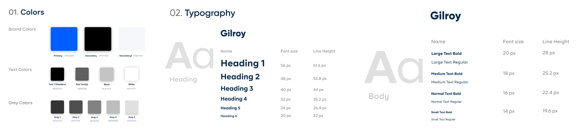

Introduction
Imagine you are new to an environment and you need a place to park your vehicle? You don't need to panick, all you need is Aparkar app at this time to solve this problem.
Aparker is a mobile application used by a community of users called “Aparker” which is used to find a parking lot. Finding a place to park your vehicle can be a challenge i.e non availability of park space in a lot, getting an authorized place to park your vehicle and fear of your vehicle been stolen.
This project was planned and executed by the Aparker team and myself. As a UI/UX Designer, my role was to conduct user research and create a clean and simple clickable mobile app.

Challenge
Reasons for Re-Design
- Poor UI & UX
Few of the screens of the old app
Research into the problem
I had a discussion with the owner of the app, to get what He expect this app to achieve in the long run, from our discussion the app is not in line with the B2C(Business to consumer) goal.
The owner wants an application that can suggest the closest parking lot to it users, give the user an option to pick between a paid lot or a free lot.
I went further to conduct usability test using the old app what know the features users want, from the outcome of the test I conducted, the users mentioned some key point, which are listed below:
- The users complained of not been able to get direction to a park
- They would appreciate if the app could estimate arrival time to a park
From the discussion with the app owner and the usability test conducted with the users, i was able to deduce what the problem is. It became evident that the failure of the first App was due to the fact that the app was designed without having the user at heart and also the owner's goal was not meant.
User Personas
From the usability test carried out with the user, I was able to pick some key feature which could be added to app to make it better.
Sade Esan
Sade is a Financial analyst working in Akure, Ondo state she is married with a kid
Feedback
She is not comfortable with the fact that the app can not give direction to its users.
Fortune Edwin
Fortune is a Gas and Petroleum Engineer working in Benin, He is single.
Feedback
In his own opnion, he suggested that the app should be able to estimate arrival time to a park
Solution
After I have gotten the B2C goal and what the user wants, i started looking for a way to meet the users' need and the business owner needs at an equillibrum. I looked up for other similar app that does the same function as this app, to get some ideas.
I came up with a full fledge mobile application that will conveniently proffer solution to the problem.
The new improvement the has are listed below
- Make payment for a paid lot
- Suggest closest parking lot
- Give direction to it user
- Estimate arrival time to it users
User Flow
Designing user flows helped us iron out some pain points, develop features in-depth, and create a cohesive look/feel later on in hi-fis.
Wireframes
After the user flow has been created, I was able to conceptualize and come up with an idea on how to create an interactive components which will enable the user to achieve the purpose for which the app was created for.

UI Style Guidelines
Created for Aparkar
Hi-Fidelity Mockup
My choice of color for this project is Blue because it symbolizes reliability and it is a calming color. This will make the user to have a sense of reliability on the app to solve the user's problem.